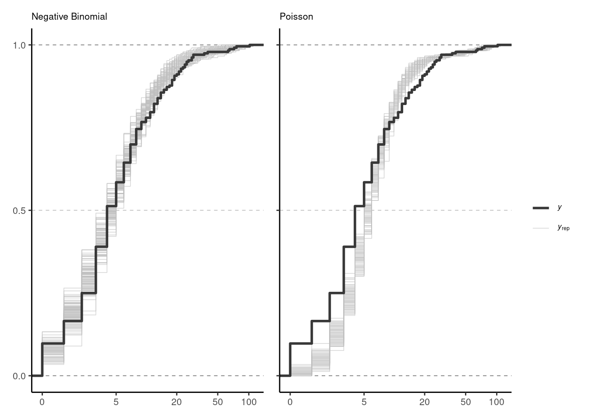
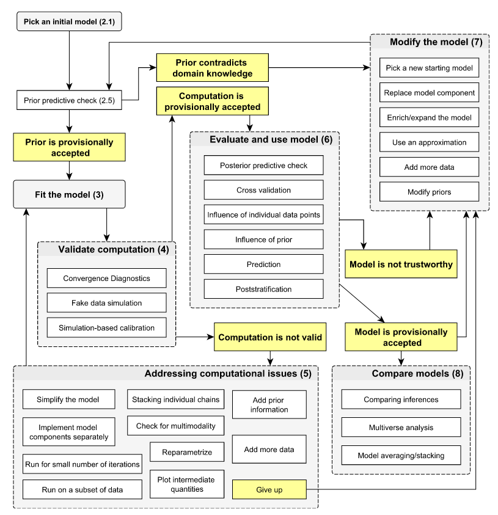
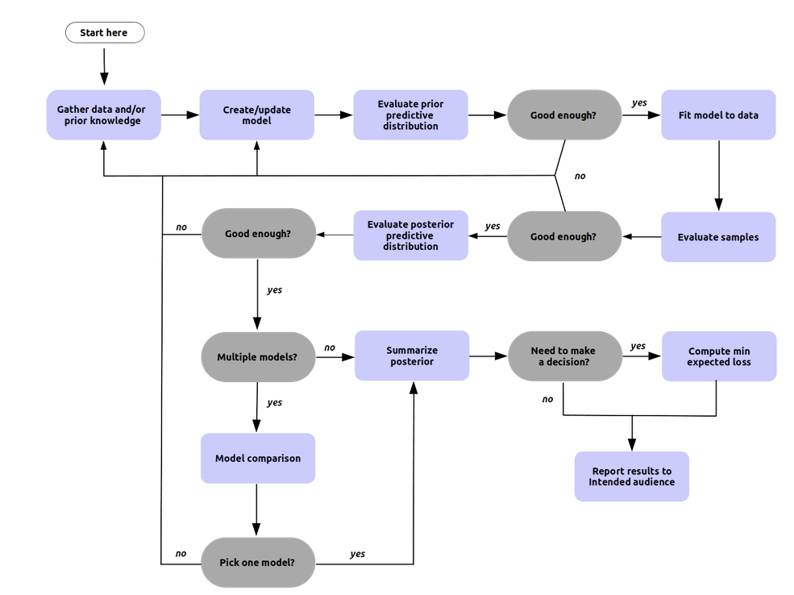
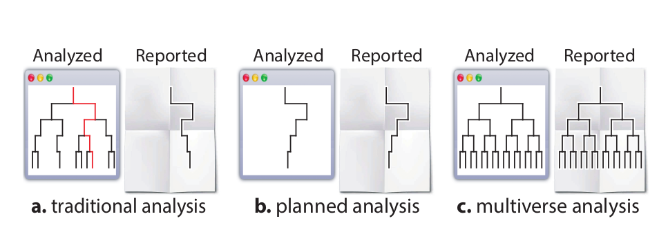
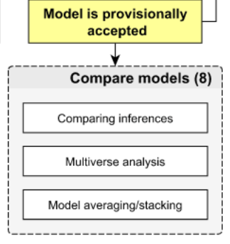

![]()
Can we combine transparent creation of sets of models (multiverse analysis) with recipes for model building and evaluation (Bayesian workflows) to support Bayesian modelling?
Bayesian modelling workflows consist of several intertwined tasks and can involve the iterative consideration of various candidate models (see, e.g., Gelman et al. (2020), Martin, Kumar, and Lao (2021)). Aspects like computation checks, model evaluation, model criticism and model comparison can motivate the consideration of multiple models and are essential when searching for models that are sufficient for obtaining accurate predictions and enabling robust decision-making (see, e.g., O’Hagan and Forster (2004), Vehtari and Ojanen (2012), Piironen and Vehtari (2017), Bürkner, Scholz, and Radev (2023)).
Multiverse analysis provides a framework to transparently investigate several models at once (Steegen et al. (2016)). But reasoning on a set of models can be challenging, and dependence structures and different weights of modelling choices are not immediately clear when confronted with a large collection of possible models (see e.g., Hall et al. (2022)).
In this preprint, we propose iterative filtering for multiverse analysis to balance the advantages of a joint investigation of multiple candidate models with the potentially overwhelming tasks of evaluating and comparing multiple models at once.
Analysing an anticonvulsant for patients with epilepsy
Code
library(here)
library(readr)
library(tictoc)
library(knitr)
library(kableExtra)
library(tinytable)
library(reactable)
library(htmltools)
library(tidyverse)
library(brms)
library(future)
library(furrr)
library(cmdstanr)
library(ggplot2)
library(ggdist)
library(patchwork)
library(latex2exp)
library(bayesplot)Let’s see how iterative filtering can be applied to multiverse analyses of anticonvulsant therapy for patients with epilepsy.
We use the dataset brms::epilepsy from the brms package (Bürkner 2017) with 236 observations of 59 patients. It was initially published by Leppik et al. (1987), and previously analysed, for example, by Thall and Vail (1990) and Breslow and Clayton (1993).
The data contains information on:
- \(\texttt{Trt}\): 0 or 1 if patient received anticonvulsant therapy
- \(\texttt{Age}\): age of patients in years
- \(\texttt{Base}\): seizure count at 8-week baseline
- \(\texttt{zAge}\): standardised age
- \(\texttt{zBase}\): standardised baseline
- \(\texttt{patient}\): patient number
- \(\texttt{visit}\): session number from 1 (first visit) to 4 (last visit)
- \(\texttt{obs}\): unique identifier for each observation
- \(\texttt{count}\): seizure count between two visits.
Here is a quick glimpse:
An initial multiverse of models
To analyse the effect of anticonvulsant therapy on seizure counts, we choose models with Poisson and negative Binomial distributional families for the observations because they are suitable for non-negative integers. Additionally, we want to investigate default prior settings in brms as well as models with a horseshoe prior with three degrees of freedom for the population-level effects. Additionally, we evaluate different combinations of covariates as well as models with and without interaction effect zBase*Trt. The combination of these modelling choices leads to \(2 \times 2 \times 6 = 24\) candidate models.
Code
# create dataframe of combinations of model components ####
combinations_df <- expand.grid(
family = names(list(poisson = poisson(), negbinomial = negbinomial())),
prior = list(brms_default = "NULL", brms_horseshoe = "horseshoe(3)"),
# population-level effects
Trt = c("", "Trt"),
zBase = c("", "zBase"),
zAge = c("", "zAge")
)
combinations_df <- combinations_df |>
# add interaction effect
mutate(zBaseTrt = factor(
case_when(
Trt == "Trt" ~ "",
Trt == "" ~ "zBase * Trt"))) |>
# filter out rows with interaction and zBase
filter(!(zBaseTrt == "zBase * Trt" & combinations_df$zBase == "zBase"))
outcome_str <- "count"
combinations_df <- combinations_df |>
# add outcome name
mutate(outcome = rep_len(outcome_str, NROW(combinations_df))) |>
# add prior names for easier summarising, plotting etc.
mutate(priors = names(combinations_df$prior)) |>
# reorder to have outcome name, family and treatment effects first
select(outcome, family, priors, prior, Trt, zBaseTrt, everything())For the sake of simplicity, we do not fit all the models here but only show the code to obtain the modelfits and load a dataframe containing the modelfits for all 24 models.
Below is the code that generates this dataframe. We set #| eval: false in the chunk options since we are not evaluating the code chunk here.
Code
initial_multiverse <- combinations_df |>
mutate(modelnames = apply(combinations_df, 1, build_name))
# workhorse: fit models ####
tic()
future::plan(multisession, workers = parallel::detectCores()-1)
initial_multiverse$modelfits <- combinations_df |>
group_nest(row_number()) |>
pull(data) |>
furrr::future_map(~build_fit(.x, dataset = brms::epilepsy), .options=furrr_options(seed=TRUE))
future::plan(sequential)
toc()
# add draws df ####
initial_multiverse <- initial_multiverse |>
mutate(model_id = paste0("Model ", row_number())) |>
mutate(draws_df = purrr::map(purrr::map(modelfits, pluck), posterior::as_draws_df))To fit the models, we use the below helper functions build_name(), build_brms_formula() and build_fit() for each row vector of modelling choices recorded in the initial dataframe. We set #| eval: false in the chunk options since we are not evaluating the code chunk here.
Code
build_name <- function(row, ...){
outcome = row[["outcome"]]
# prior names
priornames = row[["priors"]]
in_id <- c(which(!(names(row) %in% c("outcome", "family", "prior", "priors")) & row != ""))
# cells that are included in the formula
covars <- row[in_id]
# extract levels for formula
covars <- as.character(unlist(covars))
# paste formula
formula1 = paste(outcome, "~", paste(covars, collapse = "+"))
# build name
name = paste0(row[["family"]], "(", formula1, "), ", priornames)
out <- name
}
build_brms_formula <- function(row, ...){
outcome = row[["outcome"]]
fam = as.character(unlist(row["family"]))
in_id <- c(which(!(names(row) %in% c("outcome", "family", "prior", "priors", "model_name")) & row != ""))
# cells that are included in the formula
covars <- row[in_id]
# extract levels for formula
covars <- as.character(unlist(covars))
# paste formula
formula_str = paste(outcome, "~", paste(covars, collapse = "+"))
# turn string into formula
formula = brms::brmsformula(as.formula(formula_str), family=fam)
out <- formula
}
build_fit <- function(row, dataset, ...){
# set priors
if (row[["priors"]] == "brms_horseshoe"){
prior = brms::set_prior("horseshoe(3)")
} else if (row[["priors"]] == "brms_default"){
prior = NULL
}
# fit model with brms
brm(
formula = build_brms_formula(row),
data = dataset,
prior = prior,
seed = 424242,
backend = "cmdstanr",
silent = 2,
refresh = 0
)
}Evaluating the multiverse
We use the loo package (Vehtari et al. 2020) to obtain estimates of expected log predictive densities (elpd) with PSIS-LOO-CV using loo::loo(). For the purpose of this illustration, we load the loo-objects for all models that have been previously obtained and just present the code that was used to get the results for all models below.
Again, we set #| eval: false in the chunk options since we are not evaluating the code chunk here.
Code
# workhorse: default PSIS-LOO-CV for all models ####
tic()
future::plan(multisession, workers = parallel::detectCores()-1)
loos_default <- initial_multiverse |>
group_nest(row_number()) |>
pull(data) |>
furrr::future_map(~build_loos(.x, dataset = brms::epilepsy), .options=furrr_options(seed=TRUE))
toc()
future::plan(sequential)
# set names for loo objects
names(loos_default) <- initial_multiverse$modelnamesThe above code uses the following helper function build_loos() as a wrapper around loo::loo() to obtain estimates for elpd with PSIS-LOO-CV for one row in initial_multiverse.
We compare models in the set of models \(M = \{M_1, \cdots, M_K\}\) with \(K = 24\) using the difference in estimated \(\mathrm{elpd}^k\) of each model \(M_k\) compared to the model with the highest estimated . Given the estimates of elpd for all 24 models, we assess differences in elpd and associated standard errors of the differences for each model using loo::loo_compare().
comparisons_df <- loo::loo_compare(loos_default)Warning: Difference in performance potentially due to chance.See McLatchie and
Vehtari (2023) for details.comparisons_df elpd_diff se_diff
negbinomial(count ~ Trt+zBase+zAge), brms_default 0.0 0.0
negbinomial(count ~ Trt+zBase+zAge), brms_horseshoe -0.2 0.6
negbinomial(count ~ zBase * Trt+zAge), brms_horseshoe -0.8 0.6
negbinomial(count ~ zBase * Trt+zAge), brms_default -1.2 0.2
negbinomial(count ~ Trt+zBase), brms_default -1.5 1.9
negbinomial(count ~ Trt+zBase), brms_horseshoe -1.6 2.0
negbinomial(count ~ zBase * Trt), brms_horseshoe -2.0 2.0
negbinomial(count ~ zBase * Trt), brms_default -2.1 1.9
negbinomial(count ~ Trt), brms_horseshoe -88.2 14.6
negbinomial(count ~ Trt+zAge), brms_horseshoe -88.3 14.2
negbinomial(count ~ Trt), brms_default -88.9 14.8
negbinomial(count ~ Trt+zAge), brms_default -88.9 14.2
poisson(count ~ Trt+zBase+zAge), brms_default -211.1 75.4
poisson(count ~ zBase * Trt+zAge), brms_default -212.0 76.0
poisson(count ~ Trt+zBase+zAge), brms_horseshoe -212.1 76.2
poisson(count ~ zBase * Trt+zAge), brms_horseshoe -212.2 76.2
poisson(count ~ Trt+zBase), brms_default -223.6 78.1
poisson(count ~ Trt+zBase), brms_horseshoe -224.4 78.5
poisson(count ~ zBase * Trt), brms_horseshoe -225.3 78.5
poisson(count ~ zBase * Trt), brms_default -226.0 78.4
poisson(count ~ Trt), brms_default -996.4 239.4
poisson(count ~ Trt), brms_horseshoe -997.1 239.1
poisson(count ~ Trt+zAge), brms_default -999.2 234.5
poisson(count ~ Trt+zAge), brms_horseshoe -999.6 233.9 Filtering with predictive density estimates
To filter out models with largely inferior predictive abilities, we can identify a set of models with indistinguishable predictive performance compared to the best model as
\[ \left\{ M_l: 0 \in \left[\Delta \widehat{\textrm{elpd}}^l \pm 2 \widehat{\text{se}}\left(\Delta \widehat{\textrm{elpd}}^l\right)\right] \right\}_{l=1, \cdots, L \leq K}.\] To assess the reliability of the estimates for elpd, we count the number of Pareto-\(\hat{k}\) diagnostics \(> 0.7\) for each of the models.
# add sum of Pareto k's > 0.7 for all models with default LOO ####
comparisons_df <- merge(
comparisons_df,
purrr::map_dbl(purrr::map(loos_default, ~.x$diagnostics$pareto_k), ~sum(.x>0.7)),
by="row.names")
# set rownames to model names for merging
rownames(comparisons_df) <- comparisons_df$Row.names
# select everything despite Row.names
comparisons_df <- comparisons_df[2:length(comparisons_df)]
# set descriptive name for new column
colnames(comparisons_df)[ncol(comparisons_df)] <- "n_high_pareto_ks"
# add loo comparison table with default LOO ####
full_df = merge(initial_multiverse, comparisons_df, by=0)
# set row names to model names
rownames(full_df) <- full_df$Row.names
# select everything despite Row.names
full_df = full_df[2:length(full_df)]We visualise differences in estimated elpd and associated standard errors for all models and the remaining set of models indistinguishable by predictive performance. Models coloured in red are models with one or more Pareto-\(\hat{k}\) greater than 0.7.
Code
# settings for all plots
theme_set(theme_classic() +
theme(legend.position = "none",
panel.grid.major = element_blank(),
panel.grid.minor = element_blank(),
strip.background = element_blank(),
panel.background = element_blank(),
text = element_text(size=8),
plot.title = element_text(size=8),
axis.title = element_text(size=8),
axis.text = element_text(size=8)))
# prepare data for plotting
df_plot <- full_df |>
mutate(high_pareto_ks = ifelse(n_high_pareto_ks > 0, "yes", "no")) |>
arrange(elpd_diff) |>
mutate(model_id = forcats::fct_inorder(model_id)) |>
select(modelnames, family, elpd_diff, se_diff, n_high_pareto_ks, model_id, high_pareto_ks)
# create plot for all models
plot_elpddiffs <-
ggplot(data = df_plot, aes(elpd_diff, model_id, col = high_pareto_ks, shape = family)) +
geom_pointrange(aes(xmin=elpd_diff-se_diff, xmax=elpd_diff+se_diff), fatten = .5, size = 3) +
geom_vline(xintercept = 0, linetype = "dashed", color = "gray") +
labs(subtitle = "All models") +
ylab("Models") +
xlab(TeX("$\\Delta \\widehat{elpd}$")) +
scale_color_manual(values=c("yes" = "red", "no" = "black")) +
scale_shape_manual(values=c("poisson" = 1, "negbinomial" = 6))
# create plot for filtered set of models
df_plot_filtered <- df_plot |>
filter(elpd_diff + 2*se_diff >= 0)
plot_elpddiffs_filtered <-
ggplot(data = df_plot_filtered, aes(elpd_diff, model_id, col = high_pareto_ks, shape = family)) +
geom_pointrange(aes(xmin=elpd_diff-se_diff, xmax=elpd_diff+se_diff), fatten = .5, size = 3) +
geom_vline(xintercept = 0, linetype = "dashed", color = "gray") +
labs(subtitle = "Filtered set of models") +
xlab(TeX("$\\Delta \\widehat{elpd}$")) +
scale_color_manual(values=c("yes" = "red", "no" = "black")) +
scale_shape_manual(values=c("poisson" = 1, "negbinomial" = 6)) +
theme(axis.title.y = element_blank())
plot <- plot_elpddiffs | plot_elpddiffs_filtered
plot 
Filtering with posterior predictive checks
In the left subplot, elpd results where Pareto-\(\hat k\) diagnostic indicated unreliable computation for PSIS-LOO-CV are highlighted with red colour. Instead of using computationally more intensive CV approaches, we can use posterior predictive checking to rule out these models. For the given multiverse, all models with high Pareto-\(\hat k\) assume a Poisson distribution as the distributional family for the observations.
Code
# helper function
get_one_ecdf_overlay <- function(df, y, model_char = "", fontsize=8){
# set ggplot theme
theme_set(theme_classic() +
theme(panel.grid.major = element_blank(),
panel.grid.minor = element_blank(),
strip.background = element_blank(),
panel.background = element_blank(),
text = element_text(size=fontsize),
plot.title = element_text(size=fontsize),
axis.title = element_text(size=fontsize),
axis.text = element_text(size=fontsize)))
# bayesplot colour scheme
bayesplot::color_scheme_set("gray")
# get predictions for one model
yrep <- df |>
filter(model_id == model_char) |>
pull(ypred)
# get model family
modelfamily <- df |>
filter(model_id == model_char) |>
mutate(family = recode(family, "poisson" = "Poisson", "negbinomial" = "Negative Binomial")) |>
pull(family)
# get model name
modelname_long <- df |>
filter(model_id == model_char) |>
pull(modelnames)
# remove info on prior for plotting
modelname <- substr(modelname_long,1,regexpr(",",modelname_long)-1)
# create plot
plot <- ppc_ecdf_overlay(y = y, yrep = yrep[[1]][1:100,], discrete = TRUE) +
scale_x_continuous(trans="pseudo_log",
breaks=c(0, 5, 20, 50, 100),
limits=c(0,110)) +
labs(title = paste0(modelfamily))
return(plot)
}
# create two example plots
plot_ppc_ecdf_model_22 <- get_one_ecdf_overlay(full_df, brms::epilepsy$count, model_char = "Model 22") +
theme(legend.position="none")
plot_ppc_ecdf_model_21 <- get_one_ecdf_overlay(full_df, brms::epilepsy$count, model_char = "Model 21") +
theme(axis.text.y = element_blank())
# arrange
plot_ppc_ecdf_model_22_21 <- plot_ppc_ecdf_model_22 | plot_ppc_ecdf_model_21
plot_ppc_ecdf_model_22_21
The above plot shows posterior predictive checking results for the best performing model among models assuming a Poisson distribution (Model 21) and its counterpart that differs only with respect to the chosen distributional family for the observations (Model 22). The results suggest that the Poisson model is not an appropriate choice for this data.
What comes next?
In part II of this case study, we will extend the filtered set of models by including more complex models and filter again. We will also show how we can use integrated PSIS-LOO-CV to obtain reliable estimates for elpd.
Appendix
Existing work
- posterior calibration checks with Säilynoja, Bürkner, and Vehtari (2022)
- model comparison with \(\texttt{R}\)-package
loo(Vehtari et al. 2020) - multiverse analysis (Steegen et al. 2016) and
multiverse\(\texttt{R}\)-package (Sarma et al. 2021) - explorable multiverse analyses (Dragicevic et al. 2019)
- creating multiverse analysis scripts, exploring results with Boba (Liu et al. 2021)
- survey of visualisation of multiverse analyses (Hall et al. 2022)
- modular STAN (Bernstein, Vákár, and Wing 2020)
- modelling multiverse analysis for machine learning (Bell et al. 2022)
The following figures show two variants of flowcharts for Bayesian workflows with different levels of detail1. The most apparent similarities are (1) the possibility to iterate when needed, and (2) connecting the tasks of modelling and checking and tending to computational issues.
1 Another flowchart for Bayesian workflow can be found in Michael Betancourt’s blogpost “Principled Bayesian Workflow”.


Challenges in Bayesian workflows
- multi-attribute multi-objective scenarios
- navigating necessary vs. “nice-to-have” steps
- stopping criteria and sufficient exploration
- iterative model building, while transparent and robust
- communicating results of multiple models
Transparent Exploration with multiverse analysis


Multiverse analysis provides a way to transparently define and fit several models at once (Steegen et al. (2016)). In a workflow that requires iterations, this could allow parallel exploration, thereby, increasing efficiency. On the other hand, this exploration of sets of models necessarily depends on researcher/data analyst/user choices, and is subject to computational and cognitive constraints.
Reasoning on a set of models can be challenging, and dependence structures and different weights of modelling choices are not immediately clear when confronted with a large collection of possible models (see e.g., Hall et al. (2022)).
Differences and structure in a set of models
Given a set of \(m\) models \(\mathcal{M} = \{M_1, M_2, ..., M_m\}\), let \(C_1, \cdots, C_k\) denote \(k\) different modelling choices. If, for example, \(C_1 = \{\text{"poisson"}, \text{"negbinomial"}\}\), \(C_2 = \{\text{"Trt"}\}\) and \(C_3 = \{ \text{"no zAge"}, \text{"zAge"} \}\), one could draw networks of the resulting four models solely based on how much they differ in each of the conditions.
Below, the left-hand side shows one step differences, while the right-hand side includes two step differences for models created using the above modelling choices \(C_1, C_2\) and \(C_3\).
References
Citation
@online{riha2024,
author = {Riha, Anna Elisabeth},
title = {Iterative Filtering for Multiverse Analyses of Treatment
Effects},
date = {2024-04-05},
url = {https://annariha.github.io/casestudies/workflows-multiverse/},
langid = {en}
}